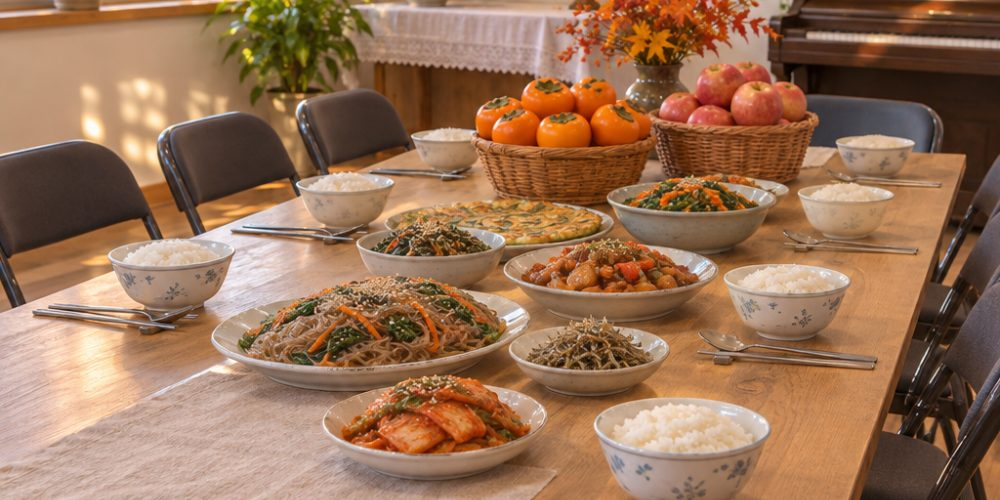

“하나님은 우리를 비교하는 존재로 창조하지 않으셨습니다. 감사하는 존재로 창조하셨습니다.”
정진 목사 · 11월 15일 추수감사주일 설교 중에서
3분 요약
감사를 적은 그 손으로, 우리는 왜 또 불평할까요?
성경을 처음부터 끝까지 찾아봐도 ‘추수감사절’이라는 말은 나오지 않습니다. 우리 믿음의 선배들은 이 감사의 날의 뿌리를 성경의 초막절에서 찾았습니다. 추수감사주일, 두 가지 질문을 붙들고 말씀 속으로 들어갔습니다.
감사를 적은 그 손으로 우리는 왜 또 불평할까요? 그리고 가진 것이 적은 해에도, 우리는 정말 감사할 수 있을까요?
본문 레위기 23:39-43 읽기
39너희가 토지 소산 거두기를 마치거든 일곱째 달 열닷샛날부터 이레 동안 여호와의 절기를 지키되 첫 날에도 안식하고 여덟째 날에도 안식할 것이요
40첫 날에는 너희가 아름다운 나무 실과와 종려나무 가지와 무성한 나무 가지와 시내 버들을 취하여 너희의 하나님 여호와 앞에서 이레 동안 즐거워할 것이라
41너희는 매년 이레 동안 여호와께 이 절기를 지킬지니 너희 대대의 영원한 규례라 너희는 일곱째 달에 이를 지킬지니라
42너희는 이레 동안 초막에 거주하되 이스라엘에서 난 자는 다 초막에 거주할지니
43이는 내가 이스라엘 자손을 애굽 땅에서 인도하여 내던 때에 초막에 거주하게 한 줄을 너희 대대로 알게 함이니라 나는 너희의 하나님 여호와이니라
1
창고가 가득할 때, 초막을 기억하라
레 23:42-43
자료 사진
같은 절기에 이름이 두 개 있습니다. 수장절은 거두어 창고에 간직한다는 뜻으로, 내가 무엇을 거두었는지를 기억하는 이름입니다. 초막절은 풀과 나뭇가지로 엮은 임시 처소라는 뜻으로, 내가 어디에서 밤을 보냈는지를 기억하는 이름입니다.
이스라엘이 이집트를 떠나 처음 밤을 보낸 곳의 이름이 숙곳, 곧 ‘초막들’이었습니다(출 12:37). 텐트도 없이 나뭇가지를 엮어 하늘을 보며 잠깐 눈을 붙인 밤이었습니다. 하나님은 창고가 가장 가득한 그때, 그 광야의 밤을 잊지 말라고 하셨습니다.
“아무것도 없지만, 다음 날 우리를 호되게 야단치며 깨우는 감독들이 없다는 것만 해도 얼마나 큰 감사 아니겠어요?”
2
감사의 반대말은 비교입니다
민 11:5-6 · 요 7:37
자료 사진
다윗도, 요나도, 선지자들도 하나님께 많이 하소연했습니다. 그런데 하나님은 그들을 쓰시고 기도를 들으셨습니다. 내 마음이 이렇다고 하나님께 솔직하게 토해 내는 것은 정직한 신앙입니다.
하나님이 화를 내신 때는 따로 있었습니다. 광야의 이스라엘이 만나를 받으면서도 이집트에서 먹던 생선과 오이와 참외를 떠올리며 비교할 때였습니다(민 11:5-6). 비교는 하나님에게서 눈을 돌려 옆 사람을 보게 하고, 감사를 훔쳐 갑니다. 그래서 우리에게 필요한 것은 더 단단한 결심이 아니라, 하나님을 바라보는 목마름입니다.
“누구든지 목마르거든 내게로 와서 마시라 나를 믿는 자는 성경에 이름과 같이 그 배에서 생수의 강이 흘러나오리라”요한복음 7:37-38 · 초막절 끝날, 큰 날에
“사람에게 불평하지 말고, 하나님께 불평하세요.”
3
해마다 70마리, 단 한 번의 십자가
히 10:10 · 골 2:16-17

자료 사진
초막절 이레 동안 이스라엘은 수송아지 70마리를 드렸고, 해마다 또 드려야 했습니다. 그런데 예수님은 자기 몸을 단번에 드리셨습니다(히 10:10). 절기는 그림자이고, 그 실체는 그리스도이십니다(골 2:17). 그래서 우리는 이 날을 ‘지켜야 하는’ 사람이 아니라 ‘기쁨으로 지키는’ 사람입니다.
“말씀이 육신이 되어 우리 가운데 거하시매”(요 1:14). 하나님이 예수님 안에서 우리 가운데 장막을 치고 함께 사십니다. 초막절에는 객과 고아와 과부도 함께 즐거워했습니다(신 16:14). 오늘 초대받아 오신 이웃은 손님이 아니라 이 감사 잔치의 주인입니다.
“단 한 번의 십자가로 완성하신 예수님께서 장막을 치시고 저와 여러분과 함께 계십니다.”
2015년 4월, 착한이웃교회는 성정동 지하 예배당에서 시작했습니다. 이스라엘 백성은 하늘의 보름달이라도 봤지만, 우리는 하늘도 볼 수 없는 지하에서 예배드렸습니다. 그때나 지금이나 가진 것은 적습니다. 올해 광야 같은 시간을 지나셨다면 억지로 감사하지 않아도, 포장하지 않아도 괜찮습니다. 나뭇가지 사이로 하나님께서 우리를 보고 계신다는 사실만은 잊지 마세요.
가진 것이 적어도, 하나님이 함께 계시니 나는 넘치는 감사로 살아갑니다!
설교 인포그래픽
추수감사절, 이 다섯 가지만 기억하세요
하나 · 이름이 두 개입니다
출 23:16 · 레 23:34
수장절收藏
거두어 창고에 간직하는 잔치 “무엇을 거두었는가”
초막절草幕
풀과 나뭇가지로 엮은 임시 집 “어디에서 살았는가”
둘 · 일곱째 달 열닷새 날, 보름
민 33:3
이스라엘 달력의 15일은 언제나 보름달이 뜨는 날입니다. 출애굽의 첫날 밤도, 초막절의 첫날 밤도 같은 보름달 아래였습니다. 올해 초막절은 우리 추석 보름달이 뜬 9월 25일 저녁에 시작되었습니다.
셋 · 이레, 그리고 여덟째 날
레 23:34, 36
12345678
감사는 하루 행사가 아니라 한 주 전체의 삶이었고, 잔치가 끝난 뒤에도 하루 더 하나님 앞에 머물렀습니다.
넷 · 수송아지 70마리
민 29:12-36 · 하루에 한 마리씩 줄어듭니다
이레 동안 70마리 · 여덟째 날 1마리 그리고 예수님은 단 한 번 자기 몸을 드리셨습니다 (히 10:10)
다섯 · 순서가 있습니다
레 23:5, 27, 34
유월절첫째 달 14일 구원
›
속죄일일곱째 달 10일 용서
›
초막절일곱째 달 15일 기쁨
설교를 마치며 드린 기도
광야에서도 저희와 함께 사신 하나님 아버지, 율법의 그림자가 아니라 그 실체 되신 예수 그리스도 안에서 오늘 이 감사의 잔치에 저희를 불러 주시니 감사드립니다.
해마다 드려야 했던 제물을 단번에 드리신 주님의 십자가 앞에, 비교하고 불평하던 저희의 마음을 내려놓습니다. 저희 가운데 장막을 치시고 함께 사시는 주님을 날마다 바라보게 하시고, 받은 감사가 가정과 일터와 이웃과 땅끝까지 흘러가게 하옵소서.
생수의 강이 되어 주신 예수 그리스도의 이름으로 기도드립니다. 아멘.
함께 드린 합심기도
받을 자격 없는 우리를 용서하시고 잔치에 앉히신 은혜에 감사하며, 올해 거두게 하신 열매 한 가지를 고백합니다.
올해 광야를 지나온 성도들과 가정을 광야에서도 함께하신 하나님께서 위로하시고 다시 일으켜 걷게 하시도록
함께 예배드린 이웃들이 하나님의 사랑을 만나고, 우리 동네와 선교지에 예수님의 생수가 흘러가도록
우리 아이들과 청소년들이 감사를 배우며 자라고, 다가오는 대림절을 기쁨으로 맞이하도록
이번 주 한 걸음
우리의 이레를 지켜요
이스라엘은 하루가 아니라 이레 동안 감사했습니다.
우리의 이레
매일 밤 잠들기 전, 잃을 뻔했는데 아직 남아 있는 것 하나를 세어 보세요.
“하나님, 이것을 지켜 주셔서 감사합니다.” 날짜를 눌러 적어 두면 이 휴대폰에 남습니다.